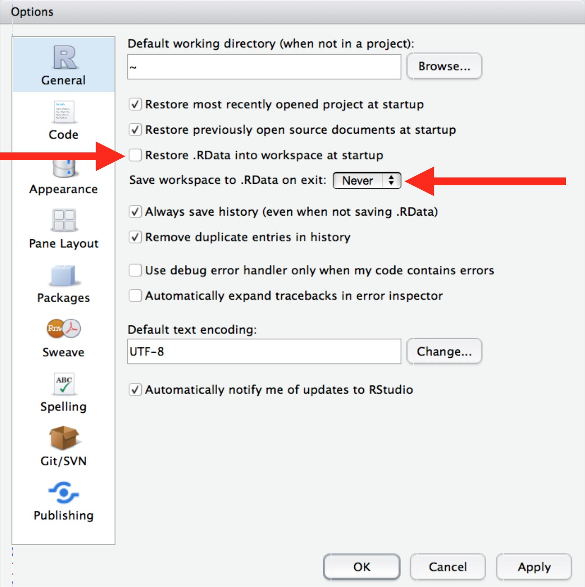

На Ubuntu 20.04, 22.04
Шаг 1: Установить r-base:
Для Ubuntu 22.04: https://www.how2shout.com/linux/how-to-install-r-base-ubuntu-22-04-lts-jammy/
Для Ubuntu 20.04: https://linuxize.com/post/how-to-install-r-on-ubuntu-20-04/
Шаг 2: Установить зависимости RStudio
В терминале (вызвать можно с помощью сочетания клавиш Ctrl+Alt+T)
sudo apt update
sudo apt install libssl-dev libclang-dev libpq5Шаг 3: Установить RStudio
Скачать отсюда https://www.rstudio.com/products/rstudio/download/#download. Выбрать бесплатную версию, соответствующую вашей операционной системе. Запустить терминал, перейти в папку загрузок и запустить: sudo dpkg -i <DEB_FILE_NAME>, где ‘DEB_FILE_NAME’ название скачанного .deb файла
Шаг 4: Установить необходимые для многих R пакетов зависимости
sudo apt update
sudo apt -y install libpng-dev libxml2-dev libxml2 libxrender1 libxtst6 libxi6 libfontconfig1-dev libmagickwand-dev libmagick++-dev
sudo apt -y install libudunits2-dev libgeos-dev libfontconfig1-dev libharfbuzz-dev libfribidi-dev libfreetype6-dev libtiff5-dev libjpeg-dev libpq-dev cargo libcurl4-openssl-devБлагодаря этой инструкции мне удалось успешно установить tidyverse со всеми его зависимостями на свежую Ubuntu 22.04, так что надеюсь, что у вас тоже все получится!
На Windows 10, 11
Шаг 1: Скачать R с официального сайта https://cran.r-project.org/bin/windows/base/ Запустить установщик.
Шаг 2: Скачать RStudio (бесплатную версию) https://www.rstudio.com/products/rstudio/download/ Запустить установщик с дефолтными параметрами.
Если вдруг у вас на компьютере юзернейм написан кириллицей, то переходите к разделу часто встречающихся проблем. Если же нет, поздравляю с подключением!
На MacOS
В целом, установка не сильно отличается от Windows.
Шаг 1: Скачать R с официального сайта https://cran.r-project.org/bin/macosx/
Запустить установщик
Шаг 2: Скачать RStudio (бесплатную версию) https://posit.co/download/rstudio-desktop/
Запустить установщик с дефолтными параметрами
Однако, я заметила, что пользователи с процессором M1 сталкиваются с определенными проблемами при установке пакетов. Например, при установке пакета psych нужен gfortran на устройстве. Можно поискать решения, погуглив, например, ‘install gfortran mac M1’. Одно из решений приведено по ссылке. Кроме того, по этой ссылке рекомендации как компилировать пакет data.table для M1 процессора.
UPD от 30.10.2024: я сама устанавливала R и RStudio и пакеты для работы на MacOS с процессором M3, и оказалось, что все работает без дополнительных настроек, просто скачиваем R и RStudio, и устанавливаем нужные пакеты как обычно через install.packages(). Возможно есть трудности с более старым процессорами линейки M.
Рекомендации по настройке RStudio перед началом работы
Первое, что советую сделать: настроить удаление RData при закрытии R и не восстанавливать при перезапуске.

Рекомендую почитать материал по эффективной организации работы в R по ссылке, разобрано более подробно и с большим количеством ссылок на дополнительные материалы
Часто встречающиеся проблемы
Одна из распространенных проблем у пользователя R на Windows - это написанное кириллицей имя пользователя.
- Надежнее всего попробовать переименовать юзернейм например по этой инструкции. Можно погуглить еще, как переименовать пользователя в вашей версии Windows, вот еще одна ссылка.
- Также можно переустановить систему с созданием юзернейма на латинице.
Но если эти подходы кажутся сложными и долгими, можно изменить пути для записи устанавливаемых библиотек, чтобы они не содержали кириллицу. Однако, я не гарантирую, что это не повлечет проблем в дальнейшем, но этот путь кажется проще.
Также способ замены дефолтного пути может помочь, если по умолчанию R пытается поставить пакеты в папку OneDrive.
Шаг 1: Создайте папку в корневом диске C:// или D:// для установки пакетов без кириллических символов и пробелов, например C:/Rlib.
Шаг 2: Создайте папку для временных файлов без кириллических символов и пробелов, например C:/Temp
Шаг 3: Выполните в консоли Rstudio команду
system("setx R_LIBS C:/Rlib")
system("setx TEMP C:/Temp")
system("setx TMP C:/Temp")Шаг 4: Перезапустите RStudio (можно сделать сочетанием клавиш Ctrl+Shift+F10)
Шаг 5: Проверьте, что R знает, куда ему ставить пакеты. Для этого выполните в консоли Rstudio команду .libPaths(). Скорее всего в выдаче будет две директории, исходная C:/Users/Юзер/AppData/..., и вновь созданная, то есть C:/Rlib. Чтобы переназначить новую директорию как дефолтную для установки пакетов запустите следующий код:
myPaths <- .libPaths() # get the paths
myPaths <- c(myPaths[2], myPaths[1]) # switch them
.libPaths(myPaths) # reassign themШаг 6: Однако это понадобится делать каждый раз при перезапуске сессии RStudio. Чтобы сделать эту настройку постоянной, можно прописать этот код в файле Rprofile. Найти этот файл можно следующим образом: Tools -> Global Options -> General

Перейти в ./library/base/R

В конце файла вставить строки, переназначающие нашу дефолтную библиотеку:
myPaths <- .libPaths()
myPaths <- c(myPaths[2], myPaths[1])
.libPaths(myPaths)Перезапустите RStudio. Надеюсь, это поможет успешно устанавливать пакеты и осваивать R!
Вот тут по ссылке можно почитать более подробно и с картинками.
Небольшое напоминание - не рекомендуется использовать кириллицу и пробелы в названиях столбцов и файлов, потому что могут быть ошибки с кодировкой при пересылании файла, в результате чего кириллица превратится в ???
Исправить это можно с помощью File - Reopen with encoding, выбрать UTF-8 в качестве кодировки. Но в целом рекомендую даже комментарии, не говоря уж об остальном писать только латиницей, это позволит избежать проблем с кодировкой в будущем.
При написании этого материала использовала следующие источники
- https://bdemeshev.github.io/installation/r/R_installation.html
- https://www.accelebrate.com/library/how-to-articles/r-rstudio-library
- Материалы со школы NGSchool
Подписывайтесь на мой телеграм-канал, следите за новостями, обещаю интересные материалы по статистике и R!